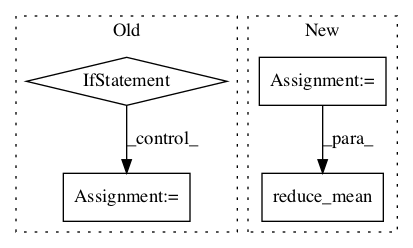

f55217e5fee88bc38e58e62e886f79e561c4d069,texar/losses/losses_utils.py,,reduce_batch_time,#Any#Any#Any#Any#Any#Any#,110

Before Change
sequence = sequence / tf.to_float(sequence_length)
if reduce_batch:
sequence = tf.reduce_sum(sequence, axis=[0])
if average_across_batch:
sequence = sequence / tf.to_float(tf.shape(sequence_length)[0])
return sequence
def reduce_dimensions(tensor, average_axes=None, sum_axes=None, keepdims=None):
After Change
if sequence_length is None:
sequence = tf.reduce_mean(sequence, axis=[1])
else:
sequence = tf.reduce_sum(sequence, axis=[1])
if average_across_timesteps:
sequence = sequence / tf.to_float(sequence_length)
if sum_over_batch:
sequence = tf.reduce_sum(sequence, axis=[0])
elif average_across_batch:
sequence = tf.reduce_mean(sequence, axis=[0])
return sequence
In pattern: SUPERPATTERN
Frequency: 3
Non-data size: 4
Instances
Project Name: asyml/texar
Commit Name: f55217e5fee88bc38e58e62e886f79e561c4d069
Time:
Author: null
File Name: texar/losses/losses_utils.py
Class Name:
Method Name: reduce_batch_time
Project Name: NVIDIA/OpenSeq2Seq
Commit Name: 44ae6129731ee1d225db8a5f1bafea5fd4b9b542
Time:
Author: null
File Name: open_seq2seq/parts/transformer/common.py
Class Name: LayerNormalization
Method Name: call
Project Name: NifTK/NiftyNet
Commit Name: f360de0fa4454122d665b9c32f4d5911a4ebec0c
Time:
Author: null
File Name: niftynet/layer/loss.py
Class Name: LossFunction
Method Name: layer_op